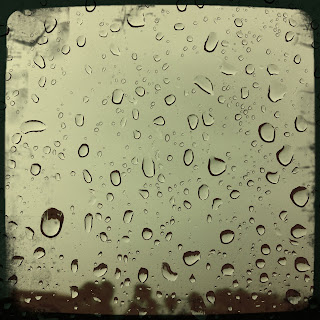

Recovered weblog entry
Rain

It's been 90+ degrees lately in AZ. So yes, I love the rain. Anything that can drop the outside temperature 30 degrees in one day is ok with me. Lens: Helga Viking
Film: Float

Recovered weblog entry

It's been 90+ degrees lately in AZ. So yes, I love the rain. Anything that can drop the outside temperature 30 degrees in one day is ok with me. Lens: Helga Viking
Film: Float